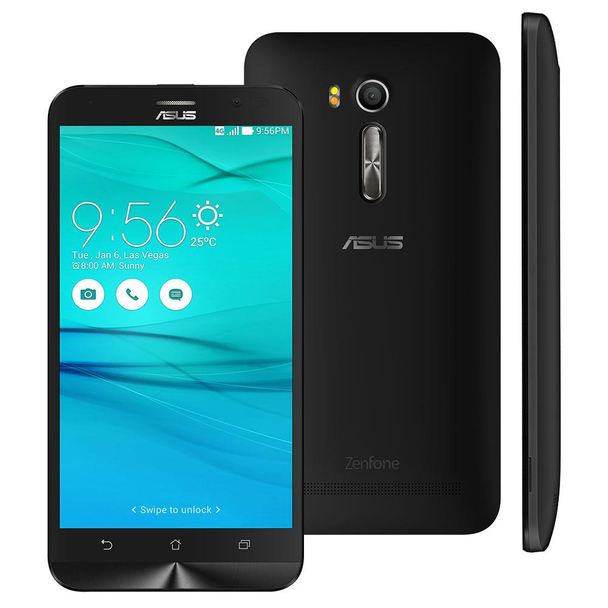

SO. IN ROMS
INICIO
FIRMWARES
OUTROS
SOBRE
CONTATO
Pra que quebrar cabeça se o Hard reset ASUS está aqui?
Outros
|
Hard_reset
|
ASUS
Para agilizar pressione a tecla
F3
e ensira o modelo.
VOLTAR
Hard Reset para o Zenfone 5 A501CG
Remoção do bloqueio de tela do Zenfone 5
Hard Reset para o Zenfone GO ZB500KG
Remoção do bloqueio de tela do Zenfone GO
Hard Reset para o Zenfone GO ZB551KL

Remoção do bloqueio de tela do Zenfone GO